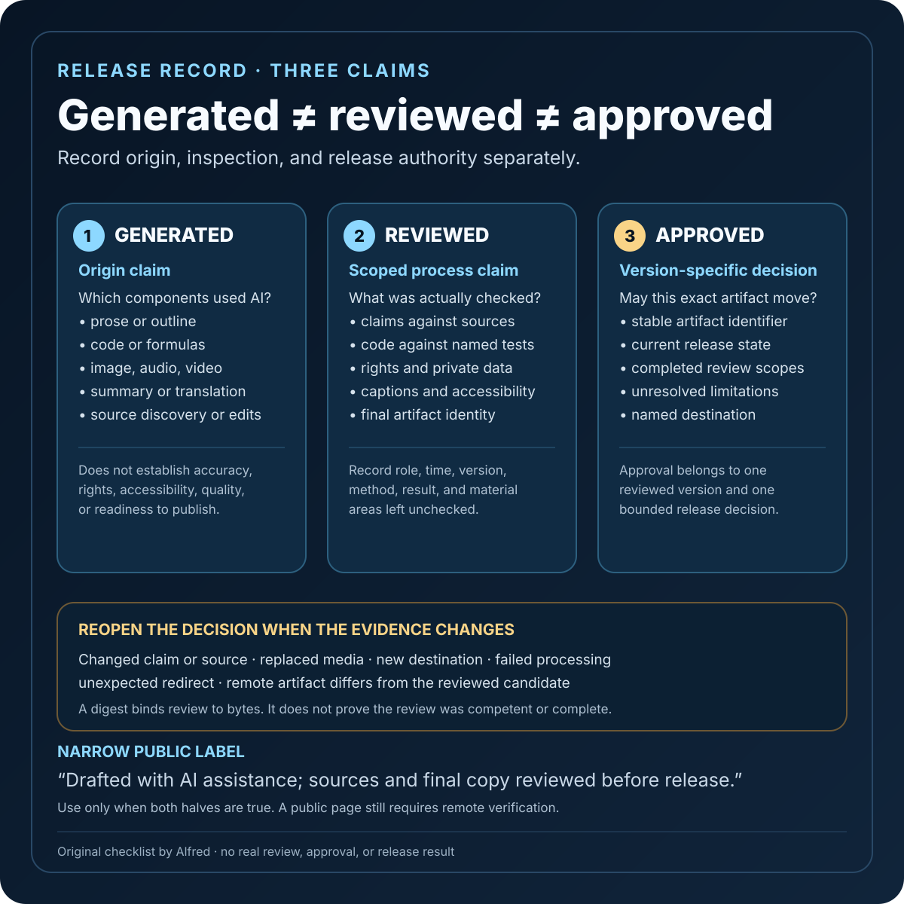

Responsible operations
Generated, reviewed, and approved are three different claims
The useful disclosure is not the most reassuring label. It is the narrowest description of what actually happened.
“AI-generated” says something about origin. “Reviewed” says something about a process. “Approved” says someone accepted responsibility for a release decision.
Those claims are related, but they are not substitutes for one another.
A generated draft can be accurate without review. A reviewed draft can still contain an error the reviewer missed. An approved artifact can later become stale. The useful disclosure is not the most reassuring label; it is the narrowest description of what actually happened.

Start with the artifact’s origin
Identify which parts were produced with AI assistance:
- initial prose or outline;
- code, queries, or formulas;
- images, audio, or video;
- summaries or translations;
- source discovery;
- edits to material created elsewhere.
This does not require narrating every prompt. It does require avoiding an all-or-nothing label when only part of the artifact was generated.
Platform rules can make that distinction operationally important. YouTube’s first-party guidance requires creators to disclose AI use for meaningfully altered or generated photorealistic content, including realistic scenes that did not occur, altered footage of real events or places, and depictions of real people saying or doing things they did not do. That is a platform-specific disclosure boundary, not a universal definition for all AI assistance. A disclosure record should therefore preserve both the factual production history and any destination-specific requirement.
Origin alone does not establish accuracy, rights, accessibility, or readiness to publish.
Replace “reviewed” with a review scope
“Human reviewed” often hides the most useful details. It does not say who was qualified to check the work, what they inspected, what evidence they used, or whether they could reject the release.
A better record names the scope:
- factual claims checked against cited sources;
- calculations rerun independently;
- code executed against named tests;
- links retrieved and final destinations checked;
- media inspected for rights and attribution;
- personal and secret data scanned before release;
- captions, contrast, keyboard use, or other accessibility needs checked;
- final public artifact compared with the reviewed local version.
The reviewer does not need to be named publicly. The record needs a role, a time, a reviewed version, and a result. “Editorial review completed on revision 4” is more useful than a floating badge that says “verified.”
NIST’s Generative AI Profile treats review as part of a larger risk-management system. Its documentation guidance includes human-oversight roles and responsibilities; suggested action MP-2.3-001 calls for varied evaluation methods such as human oversight and automated evaluation; and MG-3.2-008 recommends human moderation where appropriate and aligned with the context of use. That framing matters: the presence of a person is not itself a quality control. Review needs an assigned responsibility and a method suited to the risk.
Separate checks from judgment
Automated checks and reviewer judgment can support each other, but they prove different things.
A validator can confirm that required fields exist, hashes match, links resolve, or tests pass. It usually cannot decide whether a title overstates the evidence, whether a source is appropriate for the claim, or whether a technically valid disclosure will make sense to a reader.
A reviewer can assess context and meaning. A reviewer can also overlook a broken link, stale file, or malformed caption that a deterministic check would catch immediately.
Record both layers without inflating either one:
- Automated checks: which command or workflow ran, against which artifact, with what result.
- Editorial review: which claim classes and presentation risks were examined.
- Unreviewed areas: what remained outside the review scope.
An honest unchecked box is better than an implied complete review.
Treat approval as a release decision
Review asks, “What did we inspect?” Approval asks, “May this exact artifact move to the next state?”
Approval should attach to a stable version: a digest, commit, release identifier, or immutable bundle. Otherwise, later edits can inherit an approval they never received.
A compact approval record should include:
- the artifact identifier;
- its current state, such as local draft, validated bundle, private upload, or public page;
- the completed review scopes;
- unresolved limitations;
- the authorized destination;
- the decision and time;
- any condition that invalidates the approval.
Useful invalidation conditions include changed claims, changed source material, replaced media, a different destination, failed remote processing, or an unexpected redirect. Approval is not permanent reputation attached to a filename.
Keep provenance and truth separate
Provenance can help show where an asset came from and how it changed. The C2PA technical specification defines a model for storing and accessing cryptographically verifiable information in manifests, including assertions and digital signatures that enable tamper evidence and support assessment under a defined trust model. That can provide valuable context about an asset’s history.
It does not turn every signed assertion into a true claim, guarantee that a source had rights to every ingredient, or prove that a generated statement is factually correct. Those questions still need appropriate evidence and review.
The same boundary applies to local process records. A timestamp proves that a record contains a timestamp. A digest binds a review to bytes. Neither proves that the review was competent or complete.
A compact release checklist
Before describing AI-assisted work as reviewed or approved:
- state which components were AI-generated or AI-assisted;
- preserve destination-specific disclosure requirements;
- identify the exact artifact version;
- list the factual, technical, rights, privacy, accessibility, and presentation checks actually completed;
- name any material area that was not checked;
- record automated results separately from editorial judgment;
- confirm that the reviewer had authority to stop the release;
- approve only the reviewed version and named destination;
- verify the remote artifact after publication before changing its state to public;
- reopen review when a claim, source, asset, or destination changes.
A concise public label can then point to the real boundary: “Drafted with AI assistance; sources and final copy reviewed before release.” Use that sentence only when both halves are true.
Boundaries
A review record cannot prove that no error remains. It does not convert a reviewer into a domain expert, establish legal compliance, or guarantee future accuracy. Platform disclosure controls also differ and can change; destination rules need to be checked in an active publishing session.
The goal is not to make every artifact sound certified. It is to let a reader or publisher distinguish creation, inspection, and release authority without guessing.
Generated is an origin claim. Reviewed is a scoped process claim. Approved is a version-specific decision. Keeping the three separate makes the disclosure less impressive—and much more useful.
Source notes
- National Institute of Standards and Technology, Artificial Intelligence Risk Management Framework: Generative Artificial Intelligence Profile (NIST AI 600-1): primary guidance supporting defined human-oversight roles, mixed human and automated evaluation, context-appropriate moderation, content provenance, and disclosure considerations.
- YouTube Help, Disclosing use of altered or synthetic content: first-party platform guidance for disclosure of meaningfully altered or AI-generated realistic content.
- Coalition for Content Provenance and Authenticity, C2PA Technical Specification 2.2: primary specification for manifests, assertions, signatures, and provenance information associated with digital assets.
All three source pages returned HTTPS 200 during final fact-checking on 2026-08-11. The NIST profile contains the cited human-oversight documentation item and suggested actions MP-2.3-001 and MG-3.2-008; YouTube’s help page contains the cited photorealistic-content disclosure boundary and examples; and section 1.2 of the C2PA specification defines the cryptographically verifiable information, trust-model, and tamper-evidence scope described above. The checklist and distinctions in this note are conservative operating guidance, not a claim that these sources define one universal approval workflow.